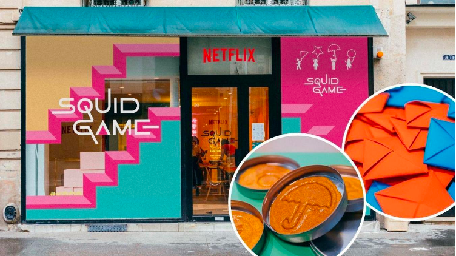

Comment Netflix nous influence au quotidien ?
Articles
TOU-DOUM ! Vous le reconnaissez ? Rares sont les journées où ce jingle ne retentit pas à travers nos écrans et dans nos têtes !
Netflix et ses séries cultes sont partout autour de nous et nous influencent quotidiennement, que ce soit dans la mode, sur les réseaux, dans nos assiettes ou dans notre éducation. Mais comment le leader des plateformes de contenus parvient-il à influer sur nos désirs et nos modes de pensées à ce point ?
Netflix, lanceur ou booster de tendances ?
Toutes ces heures à Binge watcher nos séries préférées nous feraient presque confondre fiction et réalité. Une opportunité pour Netflix, qui n’anime pas simplement nos week-end Netflix & Chill mais fait vivre un véritable engouement autour des séries, et bien au-delà, laissant la main aux fans, qui deviennent ambassadeurs de leurs séries favorites. Des fans regorgent d’imagination pour donner vie aux héros Netflix et acquièrent leurs codes vestimentaires et leurs activités, jusqu’à créer des ruptures de stock mondiales !
Rappelez-vous, le premier confinement, et notre envie soudaine de devenir champion d’échecs. Avec la sortie du jeu de la dame, la vente d’échiquiers a augmenté de 61% aux États-Unis. Toutefois, le plus étonnant reste, à la même période, la hausse de 603% des ventes de livres sur les techniques de jeu. Ces chiffres sont d’autant plus impressionnants que cette pratique n’avait jusque-là pas vraiment la côte auprès du grand public, et encore moins auprès de la Gen Z.
Source : BFM TV et Midi Libre
Beth Harmon, l’héroïne de la série devenue culte, a donné un second souffle à cette discipline souvent jugée ringarde. A travers la série, elle lui a apporté une nouvelle image, plus féminine, plus accessible et plus moderne, suscitant l’intérêt des plus jeunes.
Mais il n’y a pas que sur l’échiquier que les choses évoluent, puisque Netflix s’improvise également historien, en remettant au goût du jour des époques méconnues et des codes vestimentaires oubliés. Qui aurait cru que le corset, porté au XVIème siècle et qui a si longtemps compressé les femmes jusqu’à l’étouffement, se serait imposé comme étant l’accessoire de mode le plus tendance de 2021 ?
Plus tôt, en décembre 2020, Netflix sort les chroniques de Bridgerton, la version 19ème siècle de Gossip Girl, où les dramas de la cour sont au cœur de l’intrigue. Cette série connaît alors un succès fou dès son lancement, créant une euphorie autour de la Régence, de ses pratiques et accoutrements.
Dès son apparition, les tenues traditionnelles ont pris de la valeur et leurs ventes ont augmenté de 103%, faisant passer le corset de démodé à incontournable auprès des fashionistas !
Source : Fashion United et Business Insider
Mais ce n’est pas tout, car l’univers princier est à présent un rêve que certains aimeraient voir se réaliser. Les fans prennent ça à cœur et enchaînent les tentatives pour mettre en place des évènements similaires au grand bal de la reine.
Squid Game, le dernier né, n’est pas en reste puisque les night clubs huppés de la capitale ont profité de cet essor pour mettre à l’honneur le phénomène à travers des soirées à thèmes. Des costumes en passant par la décoration, rien n’est laissé au hasard, et surtout pas le prix de l’entrée aux évènements que l’on voit grimper d’un coup. Une façon simple, pour Netflix, d’accroître sa notoriété en surfant sur un tel succès.
Netflix : entre éducation et prise de position
Netflix ne s’arrête pas là puisque le géant des séries fait bien plus que simplement nous faire acheter ! Au fil des années, il a réussi à mettre en lumière des phénomènes de société importants, allant jusqu’à nous informer, nous instruire, voire nous éduquer sur des sujets bien souvent peu ou mal abordés.
Avec Sex Education, Netflix prend son rôle d’éducateur très au sérieux en libérant la parole sur la sexualité des adolescents. Un sujet complexe mais traité avec brio dans la série qui se joue des tabous et nous invite à plus de tolérance. Malgré l’évolution de la société, les préjugés dominent et l’acceptation peut parfois être difficile. Depuis l’apparition de Sex Education, par exemple, les choses changent et les révélations sur l’orientation sexuelle se facilitent.
Les protagonistes de la série sont une source d’inspiration pour ceux qui les suivent, leur permettant de s’affirmer en acceptant qui ils sont. Homosexualité, handicap, premières fois, sentiments, tout y passe avec une justesse souvent saluée par la critique et les professionnels. Ainsi, la série est devenue une référence et bien plus encore puisqu’elle s’est une fois de plus exportée en dehors des écrans, avec la création d’une réforme pour “délivrer” la parole sur la sexualité au lycée et la réalisation d’un magazine, d’un site dédié et d’un jeu de cartes pour sensibiliser les nouvelles générations.
Pour continuer sur sa lancée, Netflix s’attaque au sujet du harcèlement et du mal-être adolescent lors du passage à l’âge adulte. Après la diffusion de la saison 1 de 13 reasons why en 2017 et la hausse du nombre de suicides dans les lycées, la série fait polémique, parfois jugée trop violente. Netflix décide alors de la transformer en outil de prévention, pour ouvrir le dialogue et donner la force aux lycéens de partager ce qu’ils subissent.
À partir de la deuxième saison, chaque épisode contient un message vidéo de prévention réalisé par les acteurs eux-mêmes et un lien vers un site internet qui met en relation des adolescents harcelés et des professionnels. Un bon moyen pour la plateforme de prendre position et de se “rendre utile” en se servant de sa notoriété.
L’objectif de Netflix réside dans l’ouverture d’esprit et la sensibilisation mais certains évènements peuvent aussi lui échapper. C’est notamment le cas des jeux dangereux constatés dans certaines cours d’écoles suite au phénomène Squid Game. L’influence de Netflix est telle qu’elle s’immisce dans notre vie, nous poussant à agir et à nous questionner à bien des niveaux.
Netflix : as de la communication ?
En terme de communication aussi, Netflix a quelques leçons à nous donner.
Impossible, en tant que communicant qui se respecte, de passer à côté de leur compte Twitter et des talents de son community manager. Le compte fait un carton comparable au casse de la banque d’Espagne de la Casa De Papel.
Devant son ordinateur ou derrière son smartphone, l’univers Netflix nous enivre quotidiennement. Entre spoils et théories du complot, les réseaux sociaux sont devenus l’arène des séries addicts qui débattent sur les fins de saisons, en espérant raccourcir l’attente d’une suite. Difficile de scroller sur Tik Tok sans tomber sur la fameuse recette des gâteaux en sucre de Squid Game, dont le hashtag a fait 62,4 milliards de vues. Ainsi, ceux qui n’ont pas vu la série ont tout de même l’impression de connaître l’intrigue et ses secrets. Pour profiter de ce buzz sur les séries, Netflix envisage même d’inclure son propre réseau social à la plateforme, contenant l’actualité et des informations inédites.
Les fans font partie intégrante de la communication de Netflix mais, leur compte Twitter est l’un des plus actifs et des plus appréciés et compte près de 6 millions d’abonnés. Le community manager joue sur les codes du réseau et place le dialogue au cœur de sa communication. Il aborde chaque post avec humour et mystère pour donner envie d’en savoir davantage.
Pour la série française à succès Lupin, Twitter a été indispensable, incluant discrètement des indices sur la date de sortie de la saison 2 sur le compte d’Omar Sy mais que visiblement seul lui a remarqué !
Avec sa présence sur les réseaux sociaux, Netflix reste au centre des discussions, à tel point que même ceux qui ne le regardent pas, en parlent ! Pour arriver à ses fins, la plateforme crée son S.T.A.N, mais qui est-ce ? Il s’agit du service des titres qui arrivent sur Netflix, une série de vidéos YouTube drôles et attractives qui présentent les actus séries du mois. Comme sur Twitter, l’humour est au rendez-vous pour raviver l’impatience des fans en leur donnant des nouvelles de leurs héros et futurs héros préférés.
Netflix surfe sur tous les canaux digitaux pour faire perdurer le succès de ses séries mais utilise aussi les événements pour faire vivre la série en dehors de nos écrans. La plateforme propose ainsi une immersion totale, aussi bien dans stations de métro espagnoles décorées sous le signe de la Casa de Papel, que dans les centres commerciaux coréens où l’on retrouve la poupée géante de Squid Game.
Cependant, Netflix ne s’arrête pas là et exporte ses héros à l’international ! En octobre dernier, un café au cœur de Paris a accueilli les fans de Squid Game leur proposant une expérience inédite plongée dans l’univers de la série. Le pop-up fût une telle réussite et le nombre de visiteurs fût si important, que certains n’ont pas pu y accéder, obligeant les forces de l’ordre à maintenir le calme dans les rues à proximité. À quelques pas de devenir maître dans l’art du buzz, Netflix s’impose comme indispensable en toute circonstance.

Une identité synonyme de succès
Simple plateforme de contenus à ses débuts, Netflix s’est peu à peu imposée dans nos vies. De nos pratiques jusqu’à notre vocabulaire, installant par exemple l’expression “Netflix & Chill” dans notre langage courant pour exprimer le fait de rester chez soi à « binge watcher » des séries.
Netflix offre un tel potentiel que les annonceurs n’hésitent plus à l’envisager dans leur plan média, en tant que co-créateur de contenus, mais aussi comme une plateforme de diffusion à forte audience. Un programme produit ou co-produit par Netflix ayant aujourd’hui plus de valeur qu’un spot d’une minute à la télévision.
Le placement produit, apparu au cinéma, se déplace alors vers les séries, permettant ainsi aux annonceurs d’installer leurs marques dans un milieu bien précis mais aussi de l’associer à un univers et des personnages aux fans déjà acquis. Un investissement idéal pour leur permettre de se faire connaître auprès d’une cible attentive et impliquée. En intégrant des annonceurs à de tels projets, Netflix fait prendre un nouveau tournant à la publicité, même si on ne sait jamais ce que la plateforme nous réserve. Ce sont d’ailleurs ces effets de surprise qui font de Netflix une love brand à part entière !